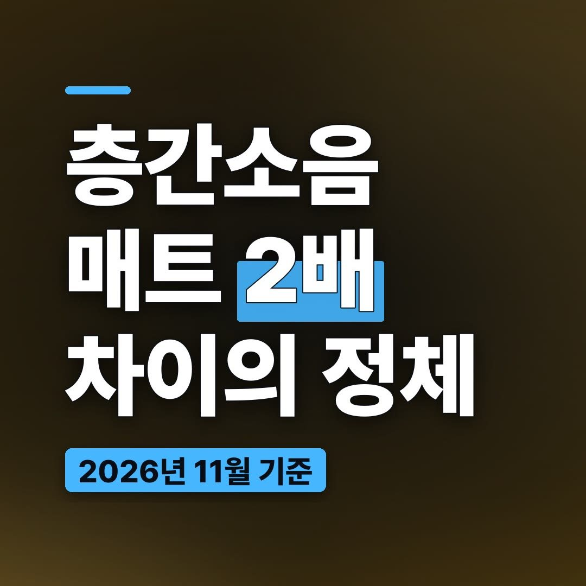
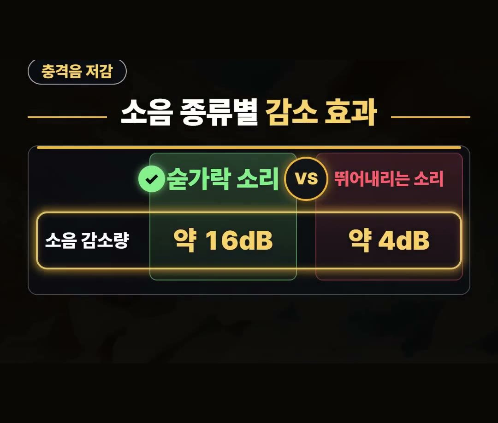
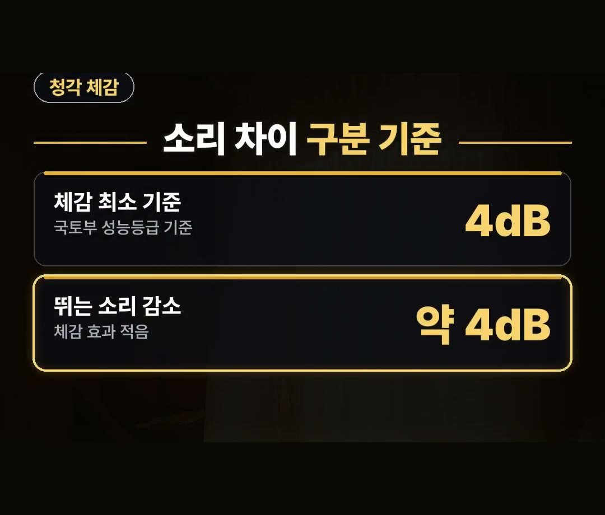

층간소음 매트 효과, 2배 비싸도 뛰는 소리 못 막는 이유
※ 이 글에는 제휴 링크가 포함되어 있으며, 링크를 통해 구매하시면 일정 수수료를 받을 수 있습니다. (가격은 같습니다)
※ 이 포스팅은 쿠팡 파트너스 활동의 일환으로, 이에 따른 일정액의 수수료를 제공받습니다.
층간소음 매트 효과가 얼마나 될지 궁금해서, 뛰는 소리를 줄이려고 매트부터 알아보고 계신가요?
값이 꽤 나가는 물건이라 고민되시죠?
이 글에서는 2025년 한국소비자원 시험평가 결과를 바탕으로 4cm 두께 폴더형 매트 8개 제품의 가격 차이와 소음 감소 수치를 정리했어요.
사기 전에 어떤 점을 봐야 할지 함께 살펴봐요.
안녕하세요, 돈 아끼는 연구소의 아낌 소장이에요.
2025년 한국소비자원 시험에서 4cm 폴더형 8개 제품은 가격이 2배 이상 차이 났지만, 뛰는 소리(중량 충격음)는 약 4~5dB(A) 줄어드는 데 그쳤어요.
이 숫자를 꼭 기억하세요! 💡

층간소음매트 가격은 2배 넘게 차이 났어요
층간소음매트를 고를 때 값이 비쌀수록 소리도 더 막아 줄 거라고 생각하기 쉬워요.
2025년 한국소비자원 시험평가 결과에 따르면, 시험한 4cm 두께 폴더형 층간소음 매트 8개 제품의 가격은 아래와 같았어요.
- 최저 16만 5천 원
- 최고 39만 9천 원
가격이 2배 이상 차이가 났다는 뜻이에요.
그런데 뛰는 소리(중량 충격음)를 줄이는 효과는 약 4~5dB(A) 감소에 그쳤고, 제품 간에 유의미한 성능 차이가 없었다고 합니다.
이 시험은 4cm 두께 폴더형 8개 제품을 대상으로 한 결과라서, 다른 두께나 다른 형태의 매트까지 똑같다고 말할 수는 없어요.
소음 종류별로 줄어드는 정도가 달랐어요
층간소음 매트 효과는 어떤 소리냐에 따라 차이가 컸어요.
소음 종류별 감소 수치는 이렇게 정리됩니다.
- 숟가락 소리: 약 16dB 감소
- 뛰어내리는 소리: 약 4dB 감소
숟가락 같은 작은 물건이 떨어지는 소리는 많이 줄었지만, 뛰어내리는 소리는 줄어드는 정도가 약했어요.
아이가 뛰는 소리를 막으려고 매트를 알아보는 분이 많은데, 바로 이 소리가 매트로 줄이는 힘이 약한 쪽이에요.

층간소음매트추천 찾기 전에 볼 소리 차이 기준
층간소음매트추천 글을 찾아보기 전에, 소리가 줄었을 때 귀로 얼마나 느끼는지도 알아 두면 좋아요.
국토부 성능등급 기준에서 소리 차이를 느끼는 최소 기준은 4dB이라고 해요.
- 체감 최소 기준: 4dB (국토부 성능등급 기준)
- 뛰는 소리 감소: 약 4dB
뛰는 소리는 줄어든 수치가 약 4dB 정도라서, 귀로 느끼는 변화가 적을 수 있어요.
숫자로는 줄었다고 나와도 아랫집이나 우리 집에서 느끼는 차이는 크지 않을 수 있다는 뜻이에요.

사기 전에 이것부터 따져 보세요
시험 결과를 바탕으로 고를 때 볼 기준 3가지를 정리했어요.
- 값만 보고 고르지 않기: 4cm 폴더형 8개 제품은 가격이 2배 이상 차이 났어도 성능 차이는 없었어요.
- 줄이고 싶은 소리 확인하기: 숟가락 소리는 약 16dB 줄었지만 뛰어내리는 소리는 약 4dB 줄었어요.
- 체감 기준 떠올리기: 소리 차이를 느끼는 최소 기준 4dB과 견줘 보면 뛰는 소리는 체감 효과가 적을 수 있어요.
뛰는 아이가 있는 집이라면 매트만 믿고 사지는 마세요.
층간소음 매트 효과를 너무 크게 기대하고 사면 아쉬울 수 있어요.
구매 전에 위 기준을 한 번 더 확인해 보세요.
정리
- 2025년 한국소비자원 시험에서 4cm 두께 폴더형 8개 제품은 가격이 최저 16만 5천 원~최고 39만 9천 원으로 2배 이상 차이 났지만, 뛰는 소리는 약 4~5dB(A) 감소에 그쳤어요.
- 소음 종류별로 숟가락 소리는 약 16dB, 뛰어내리는 소리는 약 4dB 줄었어요.
- 소리 차이를 느끼는 최소 기준은 4dB(국토부 성능등급 기준)이라 뛰는 소리는 체감이 적을 수 있어요.
링크는 아래에 모아 두었어요.
📌 2026년 11월 기준 정보예요. 가격은 시기에 따라 달라질 수 있어요.
· korea.kr
· 한국소비자원 보도자료 (비교공감 제2025-23호)
사진·영상사진·영상: Pexels (Caio Mantovani, Charlotte May, Owen Mathias, RDNE Stock project, cottonbro studio)